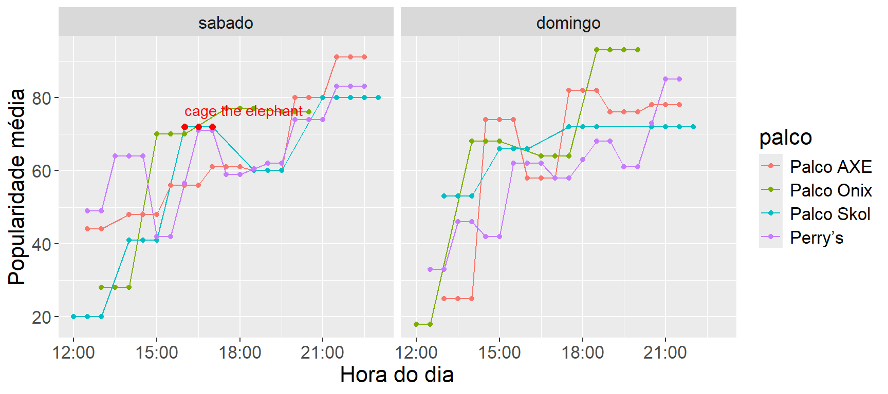
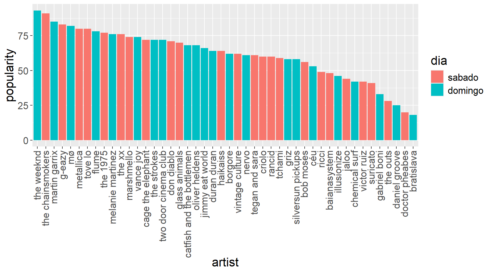
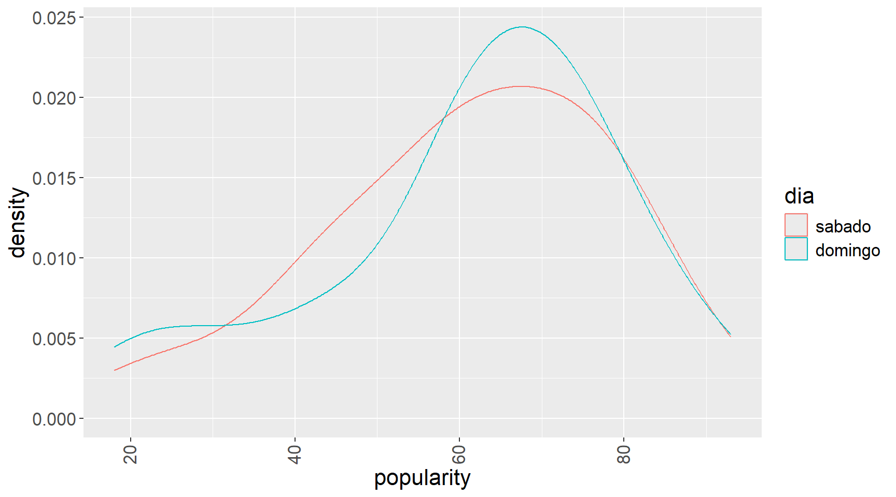
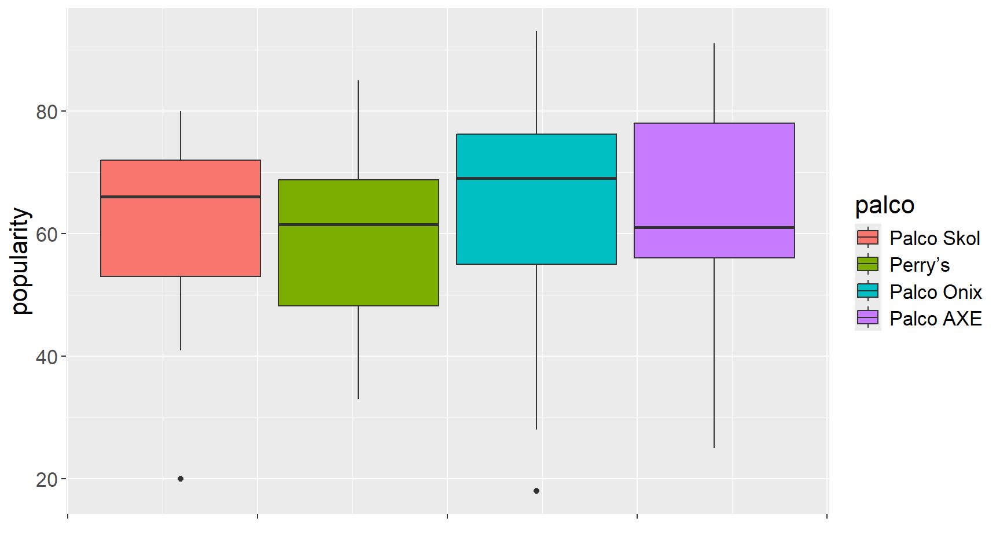

# installs Rspotify
if(!require("Rspotify"))
devtools::install_github("tiagomendesdantas/Rspotify")Lollapalooza according to Spotify
analysis
spotify
lollapalooza
api
On the day I went to Lollapalooza I discovered Rspotify, a wrapper for the Spotify API, and that gave me the idea of putting together info from both.
The fun here will involve
- Web Scraping - to download and structure the Lolapalooza SP 2017 schedule tables
- Spotify API - through the Rspotify package
- all the tidyverse packages
This year’s Lollapalooza in São Paulo had 47 bands spread over four stages. The fun part is linking the Lolla schedule to the band popularity info provided by Spotify. Below I describe how I got the data, list the three hypotheses I came up with and make some plots to discuss them.
Dataset
Prerequisites
Packages
library(Rspotify)
library(magrittr)
library(forcats)
library(stringi)
library(lubridate)
library(httr)
library(rvest)
library(tidyverse)Rspotify is a new package that isn’t on CRAN yet, but it already works.
Spotify account
To use the Spotify API you need an account on their website, as you can imagine.
Spotify App
To get an access code for their API you need to create an App within your Spotify account; this is the most bureaucratic prerequisite of all. I learned how to do it by following the steps in the README of the Rspotify package itself on Github (see here).
In the end, you’ll have an app_id, a client_id and a client_secret in hand.
Extracting the Lollapalooza SP 2017 schedule
The goal here is to get a data.frame version of the tables on the website lollapaloozabr.com/lineup-horarios/. It has the full schedule for both days of the event.
On to the code! Tip: the best way to learn what each step of the code does is to run it line by line and look at the result.
# schedule from the lollapalooza 2017 website ------------------
lolla2017_programacao <- "https://www.lollapaloozabr.com/lineup-horarios/" %>%
GET() %>%
read_html() %>%
html_table() %>%
set_names(c("sabado", "domingo")) %>%
at_depth(2, ~ .x %>%
stri_replace_all_regex(" {2,}", "") %>%
stri_replace_all_regex("[\\n]{1}", ",") %>%
stri_replace_all_regex("[,]{2,}", "\\\n") %>%
read.csv(text = ., header = FALSE,
col.names = c("artist", "hora"))) %>%
map(~ .x[-1] %>%
data_frame(palco = names(.), programacao_palco = .) %>%
unnest(programacao_palco)) %>%
data_frame(dia = names(.), programacao = .) %>%
unnest(programacao) %>%
separate(hora, c("hora_ini", "hora_fim"), sep = "-") %>%
mutate(artist = artist %>% tolower,
hora_ini = paste(if_else(dia %in% "sabado", "2017-03-25", "2017-03-26"), hora_ini) %>% ymd_hm(),
hora_ini = if_else(hour(hora_ini) < 12, hora_ini + hours(12), hora_ini),
hora_fim = paste(if_else(dia %in% "sabado", "2017-03-25", "2017-03-26"), hora_fim) %>% ymd_hm(),
hora_fim = if_else(hour(hora_fim) < 12, hora_fim + hours(12), hora_fim),
dia = fct_relevel(dia, c("sabado", "domingo")))Result
| dia | palco | artist | hora_ini | hora_fim |
|---|---|---|---|---|
| sabado | Palco Skol | cage the elephant | 2017-03-25 16:25:00 | 2017-03-25 17:25:00 |
| sabado | Palco Skol | metallica | 2017-03-25 21:00:00 | 2017-03-25 23:00:00 |
| sabado | Palco Skol | doctor pheabes | 2017-03-25 12:05:00 | 2017-03-25 13:05:00 |
| sabado | Palco Skol | rancid | 2017-03-25 18:35:00 | 2017-03-25 19:35:00 |
| sabado | Palco Skol | suricato | 2017-03-25 14:15:00 | 2017-03-25 15:15:00 |
| sabado | Palco Onix | the 1975 | 2017-03-25 17:30:00 | 2017-03-25 18:30:00 |
| sabado | Palco Onix | the outs | 2017-03-25 13:10:00 | 2017-03-25 14:10:00 |
| sabado | Palco Onix | the xx | 2017-03-25 19:40:00 | 2017-03-25 20:55:00 |
It’s interesting to note that to build this simple little table we used the httr, rvest, purrr, dplyr, tidyr, lubridate, stringi and forcats packages. Only ggplot2 was missing to complete the tidyverse.
PS: 89 fm is not a band, it was just a slot reserved for the radio station’s advertising.
Extracting the popularity of the Lollapalooza bands on Spotify
Now let’s use the Rspotify package to extract the popularity of the bands listed in the lolla2017_programacao data.frame. For that, I used an official Spotify playlist made by the Lollapalooza team itself. This playlist is identified by the id 1mHoPn6JpbtWtoBuvSXrVm in the Spotify database.
meu_token <- spotifyOAuth(app_id, client_id, client_secret) # put your info provided by Spotify here.lolla2017_playlist <- getPlaylistSongs("lollabr", "1mHoPn6JpbtWtoBuvSXrVm", token = meu_token) %>%
mutate(artistInfo = map(artistId, getArtistinfo),
artist = artist %>% tolower) %>%
rename(track_popularity = popularity,
track_id = id) %>%
unnest(artistInfo) %>%
select(artist, id, name, popularity, followers)Some bands were left out of the playlist, so I searched for the artist name in the Spotify API itself to retrieve the corresponding id. The function that does this is searchArtist().
# retrieving info on the artists the playlist forgot ----------------------
possibly_searchArtist <- possibly(searchArtist, NA_character_)
artistas_fora_da_playlist <- lolla2017_programacao %>%
filter(!artist %in% lolla2017_playlist$artist) %$%
artist %>%
data_frame(artist = .) %>%
mutate(search_artist = map(artist, ~ .x %>% possibly_searchArtist),
artist_info = map2(search_artist, artist, ~ {
if(.x %>% is.na) {data.frame(search_artist = NA)} else {
.x %>%
mutate(name = name %>% tolower) %>%
filter(name %in% .y) %>%
head(1)
}})) %>%
select(-search_artist) %>%
unnest(artist_info) %>%
select(artist, id, name, popularity, followers)Result
| artist | id | name | popularity | followers |
|---|---|---|---|---|
| ricci | 1EUMh6DZo2CfpolG75YQBL | ricci | 49 | 6116 |
| jimmy eat world | 3Ayl7mCk0nScecqOzvNp6s | jimmy eat world | 66 | 361785 |
| 89 fm | NA | NA | NA | NA |
| martin garrix | 60d24wfXkVzDSfLS6hyCjZ | martin garrix | 85 | 2244761 |
| illusionize | 3RloA7E4XMItSP4FjMBv3L | illusionize | 46 | 30054 |
Putting it all together
Now let’s join the Lolla schedule with the Spotify info. The key is artist.
lolla2017 <- left_join(lolla2017_programacao,
lolla2017_playlist %>% bind_rows(artistas_fora_da_playlist),
by = "artist") %>%
select(-id, -name) %>%
dplyr::filter(followers %>% is.na %>% not)Final dataset
| dia | palco | artist | hora_ini | hora_fim | popularity | followers |
|---|---|---|---|---|---|---|
| sabado | Palco Skol | cage the elephant | 2017-03-25 16:25:00 | 2017-03-25 17:25:00 | 72 | 745453 |
| sabado | Palco Skol | metallica | 2017-03-25 21:00:00 | 2017-03-25 23:00:00 | 80 | 3047126 |
| sabado | Palco Skol | doctor pheabes | 2017-03-25 12:05:00 | 2017-03-25 13:05:00 | 20 | 313 |
| sabado | Palco Skol | rancid | 2017-03-25 18:35:00 | 2017-03-25 19:35:00 | 60 | 220182 |
| sabado | Palco Skol | suricato | 2017-03-25 14:15:00 | 2017-03-25 15:15:00 | 41 | 52326 |
| sabado | Palco Onix | the 1975 | 2017-03-25 17:30:00 | 2017-03-25 18:30:00 | 77 | 1600845 |
| sabado | Palco Onix | the outs | 2017-03-25 13:10:00 | 2017-03-25 14:10:00 | 28 | 3788 |
| sabado | Palco Onix | the xx | 2017-03-25 19:40:00 | 2017-03-25 20:55:00 | 76 | 2383923 |
Results
Hypothesis I
Hypothesis I: the organizers used the strategy of spreading band popularity evenly throughout the day.
One of the many logistical challenges of the event is allocating the bands to time slots across the four different stages.
I went to the event on Saturday and heard that Cage The Elephant had been one of the first bands to play. I knew how popular the band was (according to Spotify, more popular than The Strokes) and right away I found it odd that the event had them play so early.
lolla2017_grafico <- lolla2017 %>%
mutate(hora = map2(hora_ini, hora_fim, ~ seq(.x, .y, 30*60) %>% floor_date("30 minutes"))) %>%
unnest(hora) %>%
group_by(dia, hora, palco) %>%
summarise(artist = first(artist),
n = n(),
mean_popularity = mean(popularity))
lolla2017_grafico %>%
ggplot(aes(x = ymd_hm(format(hora, "2017-03-26 %H%M")), y = mean_popularity, colour = palco)) +
geom_line() +
geom_point() +
geom_point(data = lolla2017_grafico %>% filter(artist %in% "cage the elephant"), colour = "red", size = 2) +
geom_text(data = lolla2017_grafico %>% filter(artist %in% "cage the elephant") %>% head(1), aes(label = artist), colour = "red", hjust = 0, vjust = -1) +
facet_wrap(~dia) +
labs(x = "Hora do dia", y = "Popularidade média") +
theme(text = element_text(size = 16))
The plot above agrees with the common sense that the popular ones are left for the end, which doesn’t help confirm the hypothesis that Cage The Elefant was badly placed.
Hypothesis II
Hypothesis II: in terms of band popularity, Sunday was better than Saturday.
Talking with friends and acquaintances, I noticed that most of them were either going on Sunday or would rather go on Sunday if they had the chance. This made me wonder whether there really was a higher concentration of good bands on Sunday.
ggplot(lolla2017 %>%
mutate(artist = artist %>% fct_reorder(popularity, .desc = TRUE))) +
geom_bar(aes(x = artist, y = popularity, fill = dia), stat = "identity", position = "dodge") +
theme(text = element_text(size = 16),
axis.text.x = element_text(angle = 90, hjust = 1, vjust = 0.4))
ggplot(lolla2017) +
geom_density(aes(fill = dia, x = popularity, colour = dia), fill = NA) +
theme(text = element_text(size = 16),
axis.text.x = element_text(angle = 90, hjust = 1, vjust = 0.4))
Conclusion: nothing suggests there was an imbalance. I think my circle of friends has some strange bias.
Hypothesis III
Hypothesis III: band popularity was balanced across the different stages.
When I questioned hypothesis I, I also thought about how hard it is to place the bands on the different stages. Since thousands of people would be fighting for space, it would be in the organizers’ interest to keep them as spread out as possible for several reasons: better queue flow, more comfort, less risk of accidents, among others, and a good way to do that would be to make the stages equally attractive so there wouldn’t be a big crowd in a single spot.
ggplot(lolla2017 %>%
mutate(palco = palco %>% as.factor %>% fct_reorder(popularity, mean))) +
geom_boxplot(aes(fill = palco, y = popularity, x = 1)) +
theme(text = element_text(size = 16),
axis.text.x = element_blank()) +
labs(x = "")
The Skol stage had the least variation in popularity and usually had artists of medium to high popularity, but the AXE and Onix stages got the heavyweight artists. The Perry’s stage hosted the most lesser-known artists.
Final remarks
The topic covered here wasn’t useful, I agree, but we went through almost every step of a typical data analysis process. We did web scraping, used APIs, tidied the data, structured the information, created variables and made plots. Only the modeling part was left out. And it’s no coincidence that all the tidyverse packages were useful in this work.
The homework is to find some interesting data on the internet and apply the steps we learned here!